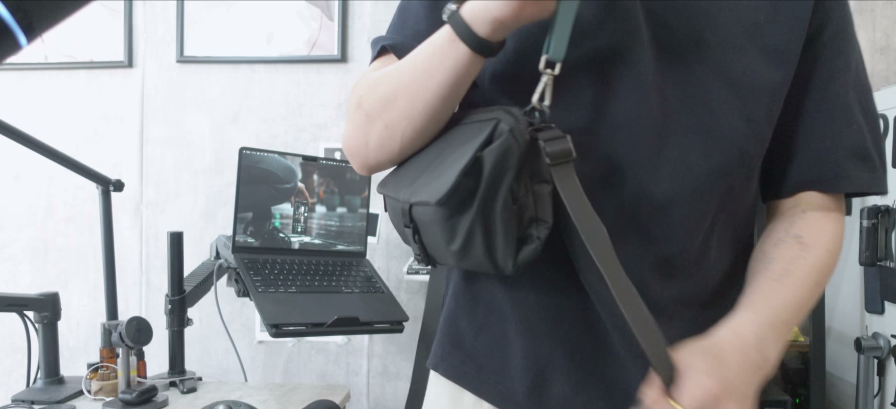

EVERYDAY CARRY
すべて見る →
いま、持ち歩いているもの。
入れ替わりのあった道具だけを載せています。使用期間は実際に持ち歩き始めた日からの日数です。
iPad mini、ミニマルなバッグ、文房具。4.5畳の部屋から、毎日持ち歩く道具を使い込みながら暮らしを整えていく。その記録が「生活編集」です。

入れ替わりのあった道具だけを載せています。使用期間は実際に持ち歩き始めた日からの日数です。
動画では語りきれなかったことを、写真と文章で。使ってから書いた記録です。
サイズ感、質感、取り回し。写真では伝わらない部分はこちらで。

4.5畳の部屋から発信しています。広い場所でも、たくさんの物でもない。限られた広さに置くものを選び直していく作業が、そのまま暮らしを整えることになる。それを「生活編集」と呼んでいます。
買ってすぐの感想は書きません。数ヶ月、数年と使い続けて、手放したものと残ったものの差が見えてから言葉にしています。だから記事にも道具にも、使用期間を必ず添えています。